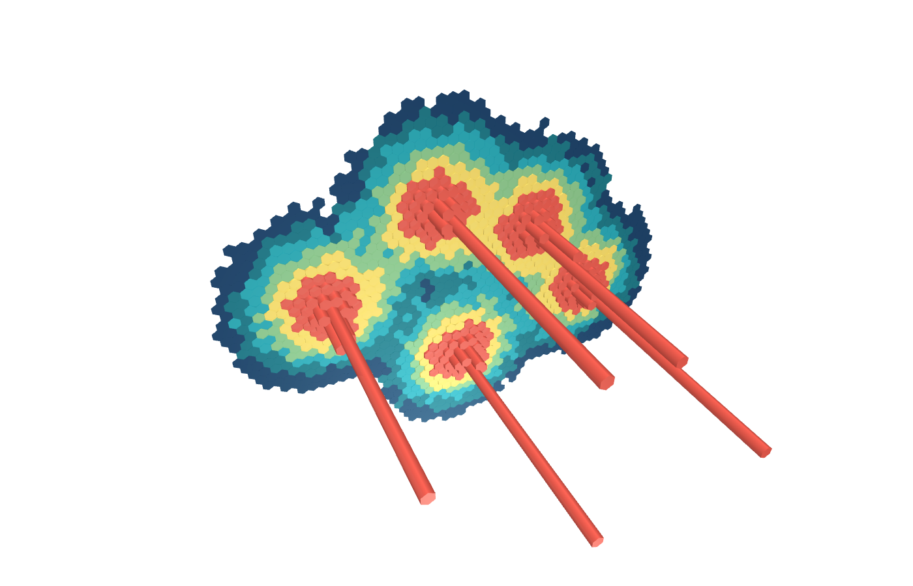

01 · aggregation
Hexagons
Where does urban activity concentrate in 3D?
src/main.ts
if (scene === 'hexagons') {
const points = makePoints();
itemCount = points.length;
deck = new Deck({
...commonProps(),
views: new OrbitView({orbitAxis: 'Y', clearColor: [0, 0, 0, 0]}),
initialViewState: {target: [4, 4, 0], rotationX: 35, rotationOrbit: 25, zoom: exportMode ? 2.35 : 2.65, minZoom: 1, maxZoom: 7},
layers: [new HexagonLayer<Point>({
id: 'density-hexagons', data: points, getPosition: d => d.position, getColorWeight: d => d.weight,
getElevationWeight: d => d.weight, elevationScale: 0.08, extruded: true, radius: 1.75,
colorScaleType: 'quantile',
colorRange: [[21, 60, 101], [22, 116, 131], [35, 168, 181], [140, 201, 138], [255, 224, 102], [237, 91, 77]],
pickable: true, opacity: 0.92, material: {ambient: 0.55, diffuse: 0.62, shininess: 28, specularColor: [80, 100, 100]}
})]
});